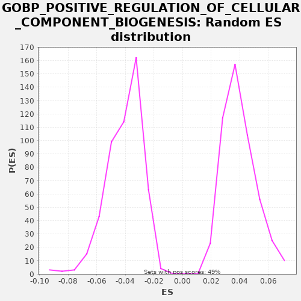

| | | Dataset | A_X_tradeoff |
| Phenotype | NoPhenotypeAvailable |
| Upregulated in class | na_neg |
| GeneSet | GOBP_POSITIVE_REGULATION_OF_CELLULAR_COMPONENT_BIOGENESIS |
| Enrichment Score (ES) | -0.22424045 |
| Normalized Enrichment Score (NES) | -5.5092735 |
| Nominal p-value | 0.0 |
| FDR q-value | 0.0 |
| FWER p-Value | 0.0 |
Table: GSEA Results Summary
 Fig 1: Enrichment plot: GOBP_POSITIVE_REGULATION_OF_CELLULAR_COMPONENT_BIOGENESIS
Fig 1: Enrichment plot: GOBP_POSITIVE_REGULATION_OF_CELLULAR_COMPONENT_BIOGENESIS
Profile of the Running ES Score & Positions of GeneSet Members on the Rank Ordered List
| SYMBOL | RANK IN GENE LIST | RANK METRIC SCORE | RUNNING ES | CORE ENRICHMENT | | 1 | CAV3 | 175 | -0.001 | -0.0071 | No |
| 2 | ACE2 | 259 | -0.001 | -0.0094 | No |
| 3 | SORBS3 | 330 | -0.002 | -0.0110 | No |
| 4 | P2RX7 | 769 | -0.004 | -0.0320 | No |
| 5 | CLDN5 | 788 | -0.004 | -0.0308 | No |
| 6 | SDC1 | 793 | -0.004 | -0.0289 | No |
| 7 | CLDN1 | 1040 | -0.006 | -0.0398 | No |
| 8 | TRABD2B | 1073 | -0.006 | -0.0394 | No |
| 9 | AGRN | 1125 | -0.006 | -0.0400 | No |
| 10 | BCAS3 | 1269 | -0.007 | -0.0454 | No |
| 11 | CX3CL1 | 1449 | -0.008 | -0.0527 | No |
| 12 | EPS8L1 | 1568 | -0.008 | -0.0568 | No |
| 13 | BAIAP2 | 1781 | -0.010 | -0.0659 | No |
| 14 | TLR4 | 1923 | -0.011 | -0.0712 | No |
| 15 | OXTR | 1930 | -0.011 | -0.0695 | No |
| 16 | WRAP73 | 1961 | -0.011 | -0.0689 | No |
| 17 | MAPK15 | 2010 | -0.011 | -0.0694 | No |
| 18 | AGT | 2017 | -0.011 | -0.0676 | No |
| 19 | MYOC | 2189 | -0.012 | -0.0745 | No |
| 20 | ALOX15 | 2216 | -0.012 | -0.0738 | No |
| 21 | TAL1 | 2393 | -0.013 | -0.0809 | No |
| 22 | SRC | 2434 | -0.014 | -0.0809 | No |
| 23 | RESF1 | 2443 | -0.014 | -0.0793 | No |
| 24 | OXT | 2684 | -0.015 | -0.0898 | No |
| 25 | HSP90AA1 | 2692 | -0.015 | -0.0881 | No |
| 26 | FUZ | 2693 | -0.015 | -0.0860 | No |
| 27 | LMOD2 | 2823 | -0.016 | -0.0907 | No |
| 28 | PFN1 | 2890 | -0.017 | -0.0920 | No |
| 29 | CSF2 | 2926 | -0.017 | -0.0918 | No |
| 30 | PHLDB1 | 3001 | -0.017 | -0.0936 | No |
| 31 | RALA | 3146 | -0.018 | -0.0991 | No |
| 32 | BAIAP2L2 | 3160 | -0.018 | -0.0977 | No |
| 33 | SYNPO | 3180 | -0.018 | -0.0966 | No |
| 34 | PINK1 | 3278 | -0.019 | -0.0996 | No |
| 35 | NUP62 | 3385 | -0.020 | -0.1031 | No |
| 36 | HAS3 | 3391 | -0.020 | -0.1012 | No |
| 37 | CDH5 | 3403 | -0.020 | -0.0997 | No |
| 38 | ZMYND10 | 3420 | -0.020 | -0.0984 | No |
| 39 | ESR1 | 3466 | -0.020 | -0.0987 | No |
| 40 | CDC42 | 3535 | -0.021 | -0.1002 | No |
| 41 | CLDN19 | 3692 | -0.022 | -0.1063 | No |
| 42 | PSMC6 | 3718 | -0.022 | -0.1055 | No |
| 43 | SERPINF2 | 3873 | -0.023 | -0.1115 | No |
| 44 | LIMS1 | 3880 | -0.024 | -0.1098 | No |
| 45 | ARHGEF10L | 3990 | -0.024 | -0.1134 | No |
| 46 | MSN | 3997 | -0.024 | -0.1116 | No |
| 47 | PSMC5 | 4058 | -0.025 | -0.1127 | No |
| 48 | CDH17 | 4121 | -0.026 | -0.1138 | No |
| 49 | TLR6 | 4133 | -0.026 | -0.1123 | No |
| 50 | TPBG | 4164 | -0.026 | -0.1118 | No |
| 51 | GMFG | 4269 | -0.027 | -0.1152 | No |
| 52 | RP1 | 4403 | -0.028 | -0.1201 | No |
| 53 | PLCE1 | 4441 | -0.028 | -0.1199 | No |
| 54 | SOX9 | 4453 | -0.028 | -0.1184 | No |
| 55 | CDC42EP2 | 4568 | -0.030 | -0.1223 | No |
| 56 | WNT10B | 4572 | -0.030 | -0.1204 | No |
| 57 | HSPA1B | 4751 | -0.031 | -0.1277 | No |
| 58 | RIPOR2 | 4760 | -0.031 | -0.1260 | No |
| 59 | GBP5 | 4926 | -0.033 | -0.1326 | No |
| 60 | HSPA1A | 5302 | -0.037 | -0.1502 | No |
| 61 | NAV3 | 5314 | -0.037 | -0.1487 | No |
| 62 | GHRL | 5332 | -0.037 | -0.1475 | No |
| 63 | IL1RAP | 5566 | -0.040 | -0.1577 | No |
| 64 | APOA1 | 5821 | -0.043 | -0.1690 | No |
| 65 | RAC1 | 5866 | -0.043 | -0.1692 | No |
| 66 | SWAP70 | 5916 | -0.044 | -0.1697 | No |
| 67 | TEK | 5981 | -0.045 | -0.1709 | No |
| 68 | EPHB1 | 5983 | -0.045 | -0.1689 | No |
| 69 | RALB | 6005 | -0.045 | -0.1679 | No |
| 70 | SLX1B | 6016 | -0.045 | -0.1663 | No |
| 71 | SMAD3 | 6026 | -0.045 | -0.1647 | No |
| 72 | VASP | 6099 | -0.046 | -0.1664 | No |
| 73 | PIEZO1 | 6113 | -0.046 | -0.1650 | No |
| 74 | CLU | 6165 | -0.047 | -0.1656 | No |
| 75 | PSRC1 | 6398 | -0.050 | -0.1757 | No |
| 76 | NOX4 | 6411 | -0.050 | -0.1742 | No |
| 77 | TRIM27 | 6413 | -0.050 | -0.1722 | No |
| 78 | ATAT1 | 6429 | -0.051 | -0.1709 | No |
| 79 | PXN | 6449 | -0.051 | -0.1698 | No |
| 80 | FLRT3 | 6532 | -0.052 | -0.1720 | No |
| 81 | GTF2H2 | 6647 | -0.054 | -0.1759 | No |
| 82 | RAPGEF3 | 6677 | -0.054 | -0.1753 | No |
| 83 | PSMC4 | 6691 | -0.054 | -0.1739 | No |
| 84 | XPA | 6756 | -0.055 | -0.1752 | No |
| 85 | TWF2 | 6761 | -0.055 | -0.1733 | No |
| 86 | F2RL1 | 6767 | -0.055 | -0.1714 | No |
| 87 | MMP3 | 6825 | -0.056 | -0.1723 | No |
| 88 | TIRAP | 6837 | -0.056 | -0.1708 | No |
| 89 | BMF | 6867 | -0.056 | -0.1702 | No |
| 90 | PHLDB2 | 6919 | -0.057 | -0.1708 | No |
| 91 | BIN1 | 6940 | -0.058 | -0.1698 | No |
| 92 | EPHA1 | 6947 | -0.058 | -0.1680 | No |
| 93 | EEF2K | 6988 | -0.058 | -0.1680 | No |
| 94 | FHOD1 | 7050 | -0.059 | -0.1691 | No |
| 95 | NRG1 | 7072 | -0.059 | -0.1681 | No |
| 96 | HRG | 7130 | -0.060 | -0.1690 | No |
| 97 | ARF6 | 7175 | -0.061 | -0.1692 | No |
| 98 | MED25 | 7243 | -0.062 | -0.1707 | No |
| 99 | RHOQ | 7317 | -0.063 | -0.1724 | No |
| 100 | VSTM5 | 7339 | -0.063 | -0.1714 | No |
| 101 | SEMA4D | 7341 | -0.063 | -0.1694 | No |
| 102 | PTPRJ | 7399 | -0.064 | -0.1703 | No |
| 103 | CDC42EP4 | 7490 | -0.065 | -0.1729 | No |
| 104 | SYNPO2 | 7498 | -0.066 | -0.1712 | No |
| 105 | AMIGO1 | 7505 | -0.066 | -0.1694 | No |
| 106 | FCHSD1 | 7559 | -0.066 | -0.1701 | No |
| 107 | CCL11 | 7563 | -0.067 | -0.1682 | No |
| 108 | CSF3 | 7596 | -0.067 | -0.1677 | No |
| 109 | LMOD1 | 7683 | -0.068 | -0.1702 | No |
| 110 | PALM | 7721 | -0.068 | -0.1700 | No |
| 111 | UBE2V2 | 7781 | -0.070 | -0.1710 | No |
| 112 | LDB2 | 7805 | -0.070 | -0.1701 | No |
| 113 | MAGEL2 | 7836 | -0.070 | -0.1696 | No |
| 114 | AMIGO2 | 7843 | -0.071 | -0.1678 | No |
| 115 | DDB2 | 7906 | -0.071 | -0.1690 | No |
| 116 | EMILIN1 | 7907 | -0.071 | -0.1669 | No |
| 117 | SNF8 | 8175 | -0.076 | -0.1789 | No |
| 118 | LRTM2 | 8188 | -0.076 | -0.1774 | No |
| 119 | ZDHHC1 | 8199 | -0.076 | -0.1758 | No |
| 120 | CCN2 | 8201 | -0.076 | -0.1738 | No |
| 121 | KDR | 8220 | -0.077 | -0.1726 | No |
| 122 | ARPC4 | 8234 | -0.077 | -0.1712 | No |
| 123 | NTRK2 | 8268 | -0.078 | -0.1709 | No |
| 124 | TNF | 8326 | -0.079 | -0.1718 | No |
| 125 | MYO1C | 8373 | -0.079 | -0.1721 | No |
| 126 | RASIP1 | 8408 | -0.080 | -0.1718 | No |
| 127 | CDC42EP1 | 8428 | -0.080 | -0.1707 | No |
| 128 | WASHC1 | 8455 | -0.081 | -0.1699 | No |
| 129 | NR1H2 | 8576 | -0.083 | -0.1742 | No |
| 130 | FES | 8584 | -0.083 | -0.1724 | No |
| 131 | PSMC2 | 8655 | -0.084 | -0.1740 | No |
| 132 | CLSTN1 | 8823 | -0.087 | -0.1807 | No |
| 133 | ARHGEF10 | 8869 | -0.088 | -0.1810 | No |
| 134 | CHD1L | 8986 | -0.090 | -0.1850 | No |
| 135 | ITGB1BP1 | 9012 | -0.090 | -0.1842 | No |
| 136 | NPHP1 | 9055 | -0.091 | -0.1843 | No |
| 137 | CORO1B | 9069 | -0.091 | -0.1829 | No |
| 138 | SEMA4A | 9104 | -0.092 | -0.1826 | No |
| 139 | VCP | 9129 | -0.092 | -0.1818 | No |
| 140 | GPSM2 | 9239 | -0.094 | -0.1854 | No |
| 141 | PPM1F | 9251 | -0.094 | -0.1839 | No |
| 142 | PSMC3 | 9283 | -0.095 | -0.1834 | No |
| 143 | FLRT2 | 9363 | -0.096 | -0.1855 | No |
| 144 | WNT11 | 9399 | -0.097 | -0.1852 | No |
| 145 | CROCC | 9423 | -0.097 | -0.1843 | No |
| 146 | AVIL | 9576 | -0.100 | -0.1902 | No |
| 147 | ASIC2 | 9582 | -0.100 | -0.1884 | No |
| 148 | CDC42EP5 | 9666 | -0.102 | -0.1907 | No |
| 149 | CBLN1 | 9685 | -0.103 | -0.1895 | No |
| 150 | CD47 | 9702 | -0.103 | -0.1883 | No |
| 151 | BAX | 9747 | -0.104 | -0.1885 | No |
| 152 | CCR7 | 9825 | -0.106 | -0.1904 | No |
| 153 | LRSAM1 | 10087 | -0.111 | -0.2021 | No |
| 154 | MET | 10101 | -0.111 | -0.2007 | No |
| 155 | MAPT | 10165 | -0.112 | -0.2019 | No |
| 156 | LRRTM3 | 10186 | -0.113 | -0.2009 | No |
| 157 | DRG1 | 10284 | -0.115 | -0.2039 | No |
| 158 | ARPIN | 10336 | -0.116 | -0.2045 | No |
| 159 | DAB2IP | 10369 | -0.117 | -0.2040 | No |
| 160 | WAS | 10426 | -0.118 | -0.2049 | No |
| 161 | WASHC5 | 10441 | -0.118 | -0.2035 | No |
| 162 | CCL24 | 10445 | -0.118 | -0.2016 | No |
| 163 | MTLN | 10446 | -0.118 | -0.1995 | No |
| 164 | ERCC2 | 10517 | -0.120 | -0.2011 | No |
| 165 | DAG1 | 10519 | -0.120 | -0.1990 | No |
| 166 | EPHA2 | 10590 | -0.121 | -0.2006 | No |
| 167 | WASF2 | 10617 | -0.122 | -0.1999 | No |
| 168 | FNIP2 | 10720 | -0.124 | -0.2032 | No |
| 169 | SRPX2 | 10731 | -0.125 | -0.2016 | No |
| 170 | PARK7 | 10747 | -0.125 | -0.2003 | No |
| 171 | AJUBA | 10759 | -0.125 | -0.1987 | No |
| 172 | NLGN3 | 10764 | -0.126 | -0.1969 | No |
| 173 | SIRT6 | 10805 | -0.127 | -0.1969 | No |
| 174 | GPR65 | 10867 | -0.128 | -0.1980 | No |
| 175 | FSCN1 | 10999 | -0.132 | -0.2028 | No |
| 176 | SETDB2 | 11003 | -0.132 | -0.2008 | No |
| 177 | BCL2L11 | 11042 | -0.133 | -0.2007 | No |
| 178 | TENM2 | 11136 | -0.135 | -0.2035 | No |
| 179 | SUMO1 | 11331 | -0.140 | -0.2117 | No |
| 180 | TESK1 | 11363 | -0.141 | -0.2112 | No |
| 181 | PLEKHM1 | 11388 | -0.141 | -0.2104 | No |
| 182 | TGFB3 | 11426 | -0.142 | -0.2102 | No |
| 183 | EPB41L5 | 11500 | -0.144 | -0.2120 | No |
| 184 | ERCC4 | 11558 | -0.145 | -0.2129 | No |
| 185 | STX18 | 11636 | -0.148 | -0.2148 | No |
| 186 | GTF2H1 | 11669 | -0.148 | -0.2144 | No |
| 187 | BDNF | 11740 | -0.150 | -0.2160 | No |
| 188 | SLITRK5 | 11773 | -0.151 | -0.2156 | No |
| 189 | SLF1 | 11797 | -0.152 | -0.2147 | No |
| 190 | TRIM28 | 11889 | -0.154 | -0.2174 | No |
| 191 | MPHOSPH8 | 11957 | -0.156 | -0.2188 | No |
| 192 | GRB2 | 12061 | -0.158 | -0.2221 | No |
| 193 | RBX1 | 12102 | -0.159 | -0.2221 | Yes |
| 194 | ABCA1 | 12137 | -0.160 | -0.2218 | Yes |
| 195 | NRP1 | 12149 | -0.161 | -0.2203 | Yes |
| 196 | ARAP1 | 12156 | -0.161 | -0.2185 | Yes |
| 197 | IQGAP2 | 12232 | -0.162 | -0.2204 | Yes |
| 198 | TPPP | 12235 | -0.163 | -0.2184 | Yes |
| 199 | MARK4 | 12255 | -0.163 | -0.2173 | Yes |
| 200 | STAM | 12289 | -0.164 | -0.2169 | Yes |
| 201 | TSC1 | 12339 | -0.166 | -0.2174 | Yes |
| 202 | DEF8 | 12387 | -0.167 | -0.2178 | Yes |
| 203 | LINGO2 | 12392 | -0.167 | -0.2159 | Yes |
| 204 | ERCC3 | 12401 | -0.167 | -0.2142 | Yes |
| 205 | DLG5 | 12405 | -0.167 | -0.2123 | Yes |
| 206 | DOCK11 | 12412 | -0.168 | -0.2105 | Yes |
| 207 | HCK | 12427 | -0.168 | -0.2091 | Yes |
| 208 | DZIP1 | 12434 | -0.168 | -0.2073 | Yes |
| 209 | BAK1 | 12535 | -0.171 | -0.2105 | Yes |
| 210 | LIMK1 | 12571 | -0.172 | -0.2102 | Yes |
| 211 | PTPRD | 12593 | -0.173 | -0.2092 | Yes |
| 212 | ATR | 12604 | -0.173 | -0.2077 | Yes |
| 213 | THY1 | 12646 | -0.174 | -0.2077 | Yes |
| 214 | PIH1D1 | 12704 | -0.176 | -0.2086 | Yes |
| 215 | WHAMM | 12707 | -0.176 | -0.2066 | Yes |
| 216 | GTF2H4 | 12768 | -0.178 | -0.2077 | Yes |
| 217 | SYNPO2L | 12782 | -0.178 | -0.2063 | Yes |
| 218 | NDEL1 | 12793 | -0.178 | -0.2047 | Yes |
| 219 | ERCC1 | 12829 | -0.179 | -0.2045 | Yes |
| 220 | CDT1 | 12901 | -0.181 | -0.2061 | Yes |
| 221 | STUB1 | 12949 | -0.183 | -0.2065 | Yes |
| 222 | LPAR1 | 12956 | -0.183 | -0.2047 | Yes |
| 223 | PAN2 | 12959 | -0.183 | -0.2027 | Yes |
| 224 | COL16A1 | 12987 | -0.184 | -0.2020 | Yes |
| 225 | ARFIP2 | 13009 | -0.185 | -0.2010 | Yes |
| 226 | SNX9 | 13098 | -0.188 | -0.2036 | Yes |
| 227 | ICAM1 | 13128 | -0.188 | -0.2030 | Yes |
| 228 | ARL2 | 13145 | -0.189 | -0.2017 | Yes |
| 229 | ASAP1 | 13179 | -0.190 | -0.2014 | Yes |
| 230 | ATF7IP | 13184 | -0.190 | -0.1995 | Yes |
| 231 | SYK | 13216 | -0.191 | -0.1990 | Yes |
| 232 | TOGARAM1 | 13285 | -0.193 | -0.2005 | Yes |
| 233 | ARF1 | 13287 | -0.193 | -0.1984 | Yes |
| 234 | TSG101 | 13352 | -0.196 | -0.1997 | Yes |
| 235 | SLX4 | 13385 | -0.197 | -0.1993 | Yes |
| 236 | ABL1 | 13395 | -0.197 | -0.1977 | Yes |
| 237 | SPIRE2 | 13423 | -0.198 | -0.1970 | Yes |
| 238 | CNOT2 | 13474 | -0.200 | -0.1975 | Yes |
| 239 | CAV1 | 13484 | -0.200 | -0.1959 | Yes |
| 240 | ATP7A | 13492 | -0.200 | -0.1942 | Yes |
| 241 | BRK1 | 13505 | -0.201 | -0.1927 | Yes |
| 242 | BID | 13520 | -0.201 | -0.1913 | Yes |
| 243 | LRRTM2 | 13577 | -0.203 | -0.1922 | Yes |
| 244 | NLGN2 | 13638 | -0.205 | -0.1932 | Yes |
| 245 | FERMT1 | 13641 | -0.206 | -0.1913 | Yes |
| 246 | SPIDR | 13659 | -0.206 | -0.1900 | Yes |
| 247 | SPAG5 | 13677 | -0.207 | -0.1888 | Yes |
| 248 | ACTR3 | 13690 | -0.207 | -0.1874 | Yes |
| 249 | CDC34 | 13699 | -0.207 | -0.1857 | Yes |
| 250 | UNC13B | 13828 | -0.211 | -0.1903 | Yes |
| 251 | PPP2R5B | 13840 | -0.212 | -0.1888 | Yes |
| 252 | PIP4K2A | 13907 | -0.214 | -0.1902 | Yes |
| 253 | USP50 | 13934 | -0.215 | -0.1895 | Yes |
| 254 | ADGRL2 | 13961 | -0.216 | -0.1887 | Yes |
| 255 | PPHLN1 | 13968 | -0.216 | -0.1869 | Yes |
| 256 | CUL4B | 14005 | -0.217 | -0.1867 | Yes |
| 257 | DHX33 | 14029 | -0.218 | -0.1859 | Yes |
| 258 | GTF2H3 | 14039 | -0.219 | -0.1842 | Yes |
| 259 | ERCC5 | 14057 | -0.219 | -0.1830 | Yes |
| 260 | CALY | 14085 | -0.220 | -0.1823 | Yes |
| 261 | SYNDIG1 | 14129 | -0.222 | -0.1825 | Yes |
| 262 | PYCARD | 14159 | -0.223 | -0.1819 | Yes |
| 263 | HDAC4 | 14172 | -0.224 | -0.1805 | Yes |
| 264 | SRF | 14176 | -0.224 | -0.1785 | Yes |
| 265 | CDC42EP3 | 14209 | -0.225 | -0.1781 | Yes |
| 266 | HSF1 | 14212 | -0.225 | -0.1761 | Yes |
| 267 | HGS | 14232 | -0.226 | -0.1750 | Yes |
| 268 | GMFB | 14255 | -0.226 | -0.1741 | Yes |
| 269 | SFRP1 | 14262 | -0.227 | -0.1723 | Yes |
| 270 | FCHSD2 | 14269 | -0.227 | -0.1705 | Yes |
| 271 | SDC4 | 14289 | -0.228 | -0.1694 | Yes |
| 272 | KCTD17 | 14318 | -0.229 | -0.1688 | Yes |
| 273 | PIP4K2B | 14336 | -0.230 | -0.1676 | Yes |
| 274 | HIP1R | 14382 | -0.232 | -0.1678 | Yes |
| 275 | DLG1 | 14434 | -0.233 | -0.1684 | Yes |
| 276 | BBS4 | 14447 | -0.234 | -0.1670 | Yes |
| 277 | MAPK9 | 14502 | -0.236 | -0.1677 | Yes |
| 278 | RAC2 | 14534 | -0.237 | -0.1672 | Yes |
| 279 | TPPP3 | 14631 | -0.242 | -0.1702 | Yes |
| 280 | NCKAP1L | 14684 | -0.244 | -0.1708 | Yes |
| 281 | RHOC | 14688 | -0.244 | -0.1689 | Yes |
| 282 | RICTOR | 14696 | -0.245 | -0.1672 | Yes |
| 283 | CHMP2A | 14717 | -0.246 | -0.1661 | Yes |
| 284 | PLK4 | 14741 | -0.247 | -0.1652 | Yes |
| 285 | ARPC3 | 14792 | -0.249 | -0.1658 | Yes |
| 286 | COBL | 14815 | -0.250 | -0.1648 | Yes |
| 287 | HTT | 14819 | -0.250 | -0.1629 | Yes |
| 288 | TENM1 | 14829 | -0.251 | -0.1613 | Yes |
| 289 | ARPC5 | 14974 | -0.257 | -0.1667 | Yes |
| 290 | FNIP1 | 15003 | -0.258 | -0.1661 | Yes |
| 291 | G3BP2 | 15028 | -0.259 | -0.1653 | Yes |
| 292 | NPHP4 | 15049 | -0.260 | -0.1642 | Yes |
| 293 | MTOR | 15054 | -0.260 | -0.1623 | Yes |
| 294 | ARFIP1 | 15084 | -0.261 | -0.1618 | Yes |
| 295 | ID1 | 15137 | -0.264 | -0.1624 | Yes |
| 296 | ATMIN | 15154 | -0.264 | -0.1612 | Yes |
| 297 | SLAIN2 | 15166 | -0.265 | -0.1596 | Yes |
| 298 | ATP13A2 | 15202 | -0.267 | -0.1594 | Yes |
| 299 | FAF1 | 15209 | -0.267 | -0.1576 | Yes |
| 300 | CEP120 | 15221 | -0.268 | -0.1561 | Yes |
| 301 | G3BP1 | 15235 | -0.269 | -0.1547 | Yes |
| 302 | LRRC24 | 15249 | -0.269 | -0.1532 | Yes |
| 303 | FLNA | 15269 | -0.270 | -0.1521 | Yes |
| 304 | CENPJ | 15280 | -0.271 | -0.1506 | Yes |
| 305 | BECN1 | 15360 | -0.274 | -0.1526 | Yes |
| 306 | RAP1B | 15373 | -0.275 | -0.1512 | Yes |
| 307 | BAIAP2L1 | 15377 | -0.275 | -0.1492 | Yes |
| 308 | EPHB3 | 15400 | -0.276 | -0.1483 | Yes |
| 309 | TERF1 | 15418 | -0.277 | -0.1471 | Yes |
| 310 | FERMT2 | 15434 | -0.278 | -0.1458 | Yes |
| 311 | HRAS | 15491 | -0.280 | -0.1466 | Yes |
| 312 | NCK2 | 15500 | -0.281 | -0.1449 | Yes |
| 313 | CD36 | 15534 | -0.282 | -0.1446 | Yes |
| 314 | ENTR1 | 15614 | -0.286 | -0.1466 | Yes |
| 315 | RAB3GAP2 | 15620 | -0.286 | -0.1448 | Yes |
| 316 | TGFB1 | 15693 | -0.290 | -0.1465 | Yes |
| 317 | CEP135 | 15698 | -0.290 | -0.1446 | Yes |
| 318 | CLASP2 | 15717 | -0.291 | -0.1434 | Yes |
| 319 | SDCBP | 15746 | -0.293 | -0.1428 | Yes |
| 320 | ARPC2 | 15786 | -0.295 | -0.1428 | Yes |
| 321 | VEGFA | 15816 | -0.296 | -0.1422 | Yes |
| 322 | CLIP1 | 15817 | -0.296 | -0.1401 | Yes |
| 323 | WNT4 | 15823 | -0.297 | -0.1383 | Yes |
| 324 | LRRC4B | 15848 | -0.299 | -0.1374 | Yes |
| 325 | ARHGAP35 | 15857 | -0.299 | -0.1357 | Yes |
| 326 | ABCA3 | 15870 | -0.300 | -0.1343 | Yes |
| 327 | RAB3GAP1 | 15947 | -0.303 | -0.1362 | Yes |
| 328 | TAPT1 | 15999 | -0.306 | -0.1368 | Yes |
| 329 | PIK3R1 | 16015 | -0.306 | -0.1355 | Yes |
| 330 | ARPC1A | 16035 | -0.307 | -0.1344 | Yes |
| 331 | DDB1 | 16052 | -0.308 | -0.1331 | Yes |
| 332 | PLEK | 16060 | -0.309 | -0.1314 | Yes |
| 333 | NCK1 | 16071 | -0.309 | -0.1298 | Yes |
| 334 | WASL | 16098 | -0.311 | -0.1291 | Yes |
| 335 | NF2 | 16099 | -0.311 | -0.1270 | Yes |
| 336 | RPA2 | 16103 | -0.311 | -0.1250 | Yes |
| 337 | EVL | 16115 | -0.312 | -0.1235 | Yes |
| 338 | CTTN | 16126 | -0.312 | -0.1219 | Yes |
| 339 | WASF3 | 16143 | -0.314 | -0.1207 | Yes |
| 340 | CREB1 | 16221 | -0.318 | -0.1226 | Yes |
| 341 | CEP295 | 16243 | -0.319 | -0.1216 | Yes |
| 342 | ULK1 | 16256 | -0.319 | -0.1202 | Yes |
| 343 | TASOR | 16274 | -0.321 | -0.1190 | Yes |
| 344 | DCTN1 | 16278 | -0.321 | -0.1170 | Yes |
| 345 | FER | 16283 | -0.321 | -0.1151 | Yes |
| 346 | TGFBR1 | 16297 | -0.322 | -0.1137 | Yes |
| 347 | CYFIP1 | 16376 | -0.327 | -0.1157 | Yes |
| 348 | DPYSL3 | 16383 | -0.327 | -0.1139 | Yes |
| 349 | ATM | 16392 | -0.328 | -0.1123 | Yes |
| 350 | PPM1E | 16405 | -0.328 | -0.1108 | Yes |
| 351 | LRRN1 | 16427 | -0.330 | -0.1098 | Yes |
| 352 | VPS4A | 16428 | -0.330 | -0.1077 | Yes |
| 353 | DNM2 | 16441 | -0.331 | -0.1062 | Yes |
| 354 | GPM6A | 16469 | -0.333 | -0.1055 | Yes |
| 355 | PLEK2 | 16514 | -0.335 | -0.1058 | Yes |
| 356 | CLASP1 | 16546 | -0.337 | -0.1053 | Yes |
| 357 | JMY | 16559 | -0.338 | -0.1038 | Yes |
| 358 | NIN | 16616 | -0.343 | -0.1047 | Yes |
| 359 | PIK3CA | 16632 | -0.344 | -0.1034 | Yes |
| 360 | PDCD6IP | 16748 | -0.352 | -0.1073 | Yes |
| 361 | CNOT1 | 16761 | -0.353 | -0.1059 | Yes |
| 362 | FNBP1L | 16784 | -0.355 | -0.1049 | Yes |
| 363 | SLITRK1 | 16806 | -0.356 | -0.1039 | Yes |
| 364 | RHOA | 16824 | -0.358 | -0.1027 | Yes |
| 365 | SLF2 | 16887 | -0.362 | -0.1039 | Yes |
| 366 | ICE1 | 16972 | -0.369 | -0.1062 | Yes |
| 367 | PIP4K2C | 17030 | -0.374 | -0.1071 | Yes |
| 368 | SCIN | 17042 | -0.375 | -0.1056 | Yes |
| 369 | LCP1 | 17044 | -0.375 | -0.1035 | Yes |
| 370 | MPP7 | 17097 | -0.379 | -0.1042 | Yes |
| 371 | ZMYND8 | 17188 | -0.386 | -0.1068 | Yes |
| 372 | GTF2H5 | 17218 | -0.389 | -0.1062 | Yes |
| 373 | MNS1 | 17232 | -0.390 | -0.1048 | Yes |
| 374 | ANLN | 17244 | -0.391 | -0.1033 | Yes |
| 375 | MECP2 | 17260 | -0.392 | -0.1020 | Yes |
| 376 | SLITRK6 | 17374 | -0.404 | -0.1059 | Yes |
| 377 | BHLHB9 | 17495 | -0.416 | -0.1101 | Yes |
| 378 | PRKCE | 17525 | -0.419 | -0.1095 | Yes |
| 379 | TPR | 17580 | -0.424 | -0.1102 | Yes |
| 380 | RPA1 | 17583 | -0.425 | -0.1083 | Yes |
| 381 | HRK | 17587 | -0.425 | -0.1063 | Yes |
| 382 | AP1AR | 17594 | -0.426 | -0.1045 | Yes |
| 383 | VIL1 | 17646 | -0.431 | -0.1051 | Yes |
| 384 | DYNC1H1 | 17664 | -0.433 | -0.1039 | Yes |
| 385 | ABI2 | 17707 | -0.437 | -0.1040 | Yes |
| 386 | MAPRE1 | 17766 | -0.445 | -0.1050 | Yes |
| 387 | VPS4B | 17823 | -0.451 | -0.1058 | Yes |
| 388 | IQGAP1 | 17830 | -0.452 | -0.1040 | Yes |
| 389 | CXCL13 | 17834 | -0.452 | -0.1021 | Yes |
| 390 | SETDB1 | 17835 | -0.452 | -0.1000 | Yes |
| 391 | PRKCA | 17836 | -0.452 | -0.0979 | Yes |
| 392 | BAG4 | 17872 | -0.457 | -0.0976 | Yes |
| 393 | CKAP5 | 17885 | -0.459 | -0.0962 | Yes |
| 394 | AUTS2 | 17986 | -0.472 | -0.0993 | Yes |
| 395 | SPIRE1 | 17991 | -0.472 | -0.0974 | Yes |
| 396 | CUL4A | 18002 | -0.474 | -0.0959 | Yes |
| 397 | CLSTN2 | 18045 | -0.481 | -0.0960 | Yes |
| 398 | PLPPR5 | 18061 | -0.484 | -0.0947 | Yes |
| 399 | NCKAP1 | 18094 | -0.490 | -0.0943 | Yes |
| 400 | MIEN1 | 18105 | -0.492 | -0.0927 | Yes |
| 401 | AKIRIN1 | 18114 | -0.493 | -0.0910 | Yes |
| 402 | CDK5RAP2 | 18134 | -0.498 | -0.0899 | Yes |
| 403 | PAK1 | 18144 | -0.499 | -0.0883 | Yes |
| 404 | RPS3 | 18188 | -0.505 | -0.0884 | Yes |
| 405 | RGCC | 18205 | -0.509 | -0.0872 | Yes |
| 406 | TTBK1 | 18215 | -0.510 | -0.0856 | Yes |
| 407 | ACTR2 | 18234 | -0.513 | -0.0844 | Yes |
| 408 | OCLN | 18268 | -0.521 | -0.0840 | Yes |
| 409 | CAND1 | 18293 | -0.526 | -0.0832 | Yes |
| 410 | FMR1 | 18315 | -0.530 | -0.0822 | Yes |
| 411 | LRRN3 | 18333 | -0.535 | -0.0810 | Yes |
| 412 | GRID2 | 18364 | -0.539 | -0.0805 | Yes |
| 413 | CNOT6 | 18401 | -0.549 | -0.0803 | Yes |
| 414 | FMN1 | 18422 | -0.552 | -0.0792 | Yes |
| 415 | WASF1 | 18427 | -0.553 | -0.0774 | Yes |
| 416 | CCK | 18448 | -0.557 | -0.0763 | Yes |
| 417 | NUMA1 | 18461 | -0.560 | -0.0748 | Yes |
| 418 | MAP4K4 | 18473 | -0.563 | -0.0733 | Yes |
| 419 | EPHB2 | 18485 | -0.567 | -0.0718 | Yes |
| 420 | ARPC1B | 18486 | -0.567 | -0.0697 | Yes |
| 421 | ROCK2 | 18521 | -0.576 | -0.0694 | Yes |
| 422 | GNL3L | 18537 | -0.580 | -0.0681 | Yes |
| 423 | NLGN1 | 18538 | -0.580 | -0.0660 | Yes |
| 424 | CCDC88A | 18551 | -0.585 | -0.0645 | Yes |
| 425 | EPS8L2 | 18565 | -0.589 | -0.0631 | Yes |
| 426 | AKAP9 | 18596 | -0.598 | -0.0626 | Yes |
| 427 | FLOT1 | 18612 | -0.603 | -0.0613 | Yes |
| 428 | ARHGEF15 | 18617 | -0.604 | -0.0594 | Yes |
| 429 | PTK2B | 18625 | -0.608 | -0.0576 | Yes |
| 430 | TFRC | 18642 | -0.612 | -0.0564 | Yes |
| 431 | FAM98A | 18646 | -0.613 | -0.0544 | Yes |
| 432 | DNM3 | 18657 | -0.615 | -0.0529 | Yes |
| 433 | PICK1 | 18703 | -0.631 | -0.0531 | Yes |
| 434 | DDX3X | 18704 | -0.632 | -0.0510 | Yes |
| 435 | ARHGEF5 | 18710 | -0.634 | -0.0492 | Yes |
| 436 | SH3GLB1 | 18735 | -0.642 | -0.0484 | Yes |
| 437 | ADGRB3 | 18739 | -0.644 | -0.0464 | Yes |
| 438 | CCP110 | 18760 | -0.650 | -0.0454 | Yes |
| 439 | TPM1 | 18769 | -0.653 | -0.0437 | Yes |
| 440 | EIF4G1 | 18773 | -0.654 | -0.0417 | Yes |
| 441 | CUX2 | 18775 | -0.656 | -0.0397 | Yes |
| 442 | APC | 18846 | -0.692 | -0.0413 | Yes |
| 443 | CNOT6L | 18848 | -0.693 | -0.0392 | Yes |
| 444 | CORO1A | 18854 | -0.695 | -0.0374 | Yes |
| 445 | RACK1 | 18883 | -0.708 | -0.0368 | Yes |
| 446 | PARP1 | 18897 | -0.715 | -0.0354 | Yes |
| 447 | DYNLL1 | 18916 | -0.726 | -0.0342 | Yes |
| 448 | CARMIL2 | 18921 | -0.729 | -0.0323 | Yes |
| 449 | ROCK1 | 18970 | -0.757 | -0.0327 | Yes |
| 450 | GSK3B | 19016 | -0.783 | -0.0330 | Yes |
| 451 | ARPC5L | 19027 | -0.792 | -0.0314 | Yes |
| 452 | DNMT1 | 19063 | -0.816 | -0.0312 | Yes |
| 453 | ADGRB1 | 19078 | -0.836 | -0.0298 | Yes |
| 454 | KIT | 19098 | -0.849 | -0.0287 | Yes |
| 455 | NRXN1 | 19111 | -0.871 | -0.0273 | Yes |
| 456 | EPS8 | 19134 | -0.901 | -0.0263 | Yes |
| 457 | CARMIL1 | 19136 | -0.903 | -0.0243 | Yes |
| 458 | CTNNA2 | 19144 | -0.908 | -0.0225 | Yes |
| 459 | BMP7 | 19158 | -0.922 | -0.0211 | Yes |
| 460 | CLSTN3 | 19159 | -0.922 | -0.0190 | Yes |
| 461 | SKAP1 | 19167 | -0.927 | -0.0173 | Yes |
| 462 | GSN | 19173 | -0.933 | -0.0154 | Yes |
| 463 | BIK | 19185 | -0.945 | -0.0139 | Yes |
| 464 | PFN2 | 19186 | -0.947 | -0.0118 | Yes |
| 465 | CDK5R1 | 19197 | -0.967 | -0.0103 | Yes |
| 466 | RPA3 | 19207 | -0.983 | -0.0086 | Yes |
| 467 | SNCA | 19238 | -1.018 | -0.0081 | Yes |
| 468 | CRB3 | 19261 | -1.049 | -0.0072 | Yes |
| 469 | LGALS3 | 19268 | -1.061 | -0.0054 | Yes |
| 470 | HAP1 | 19300 | -1.119 | -0.0049 | Yes |
| 471 | SMPD3 | 19331 | -1.196 | -0.0044 | Yes |
| 472 | MAP1B | 19396 | -1.393 | -0.0057 | Yes |
| 473 | LIMCH1 | 19404 | -1.455 | -0.0039 | Yes |
| 474 | S100A10 | 19436 | -1.666 | -0.0035 | Yes |
| 475 | CLDN3 | 19439 | -1.677 | -0.0015 | Yes |
| 476 | CHGA | 19441 | -1.719 | 0.0006 | Yes |
Table: GSEA details [plain text format]

Fig 2: GOBP_POSITIVE_REGULATION_OF_CELLULAR_COMPONENT_BIOGENESIS: Random ES distribution
Gene set null distribution of ES for GOBP_POSITIVE_REGULATION_OF_CELLULAR_COMPONENT_BIOGENESIS